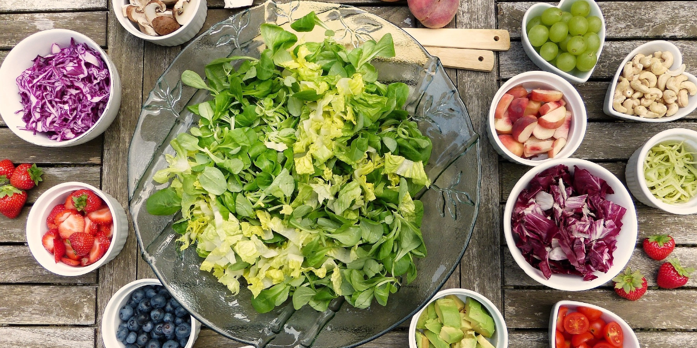

いつでもそばに 美味しい野菜を

採れたての新鮮な野菜
Takumiはいつでも取れたての新鮮な野菜を配送。だから届いてもすぐにおいしく、生のままでも食べることが出来ます。
普段から野菜不足だなと感じる日本人は多いものの、あまり多く食べられないのが現実。
私たちは、野菜の定期便で野菜不足の生活をしっかりサポート。1日に必要な野菜を全てお届け。
自由に調理するもよし、そのまま食べるもよし。野菜をふんだんに取り入れた生活で、健康な毎日を。
Takumiはいつでも取れたての新鮮な野菜を配送。だから届いてもすぐにおいしく、生のままでも食べることが出来ます。
普段から野菜不足だなと感じる日本人は多いものの、あまり多く食べられないのが現実。
私たちは、野菜の定期便で野菜不足の生活をしっかりサポート。1日に必要な野菜を全てお届け。
自由に調理するもよし、そのまま食べるもよし。野菜をふんだんに取り入れた生活で、健康な毎日を。